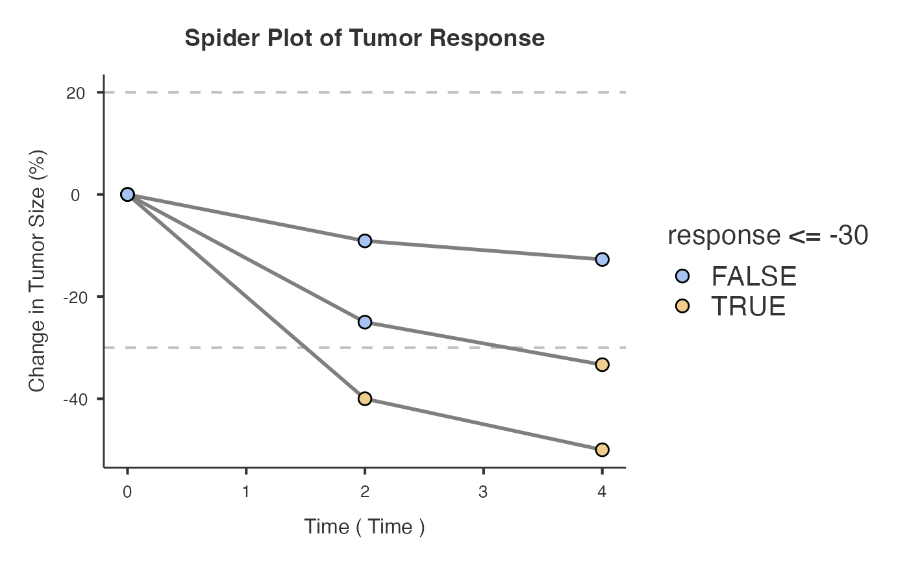
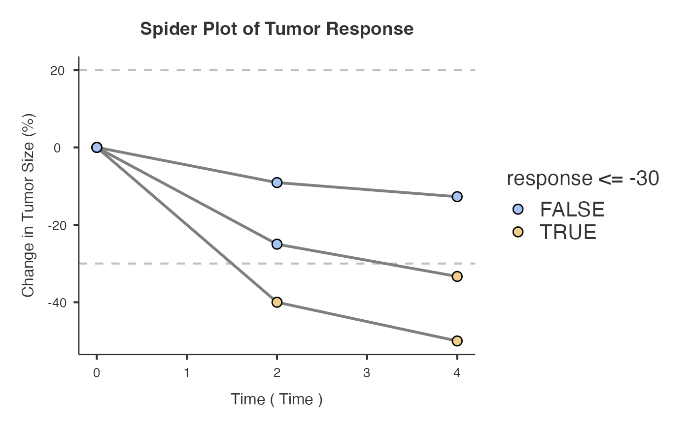

Treatment Response Analysis
waterfall.RdCreates waterfall and spider plots to analyze tumor response data following RECIST criteria. Supports both raw tumor measurements and pre-calculated percentage changes. Provides comprehensive response analysis including ORR, DCR, and person-time metrics.
waterfall(
data,
patientID,
responseVar,
timeVar = NULL,
groupVar = NULL,
inputType = "percentage",
sortBy = "response",
showThresholds = FALSE,
labelOutliers = FALSE,
showMedian = FALSE,
showCI = FALSE,
minResponseForLabel = 50,
colorBy = "recist",
colorScheme = "jamovi",
barAlpha = 1,
barWidth = 0.7,
showWaterfallPlot = TRUE,
showSpiderPlot = TRUE,
spiderColorBy = "response",
spiderColorScheme = "classic"
)Arguments
- data
The data as a data frame.
- patientID
Variable containing patient identifiers.
- responseVar
Response variable: either raw tumor measurements or pre-calculated percentage changes. For raw measurements, requires a time variable with baseline (time = 0). For percentages, negative values indicate tumor shrinkage (improvement).
- timeVar
Time point of measurement for spider plot (e.g., months from baseline)
- groupVar
Optional grouping variable for coloring bars by patient groups (e.g., treatment arms, disease subtypes). When specified, overrides RECIST category coloring to show group-based colors.
- inputType
Specify data format: 'raw' for actual measurements (will calculate percent change) or 'percentage' for pre-calculated percentage changes
- sortBy
Sort the waterfall plot by best response or patient ID.
- showThresholds
Show +20 percent and -30 percent RECIST thresholds.
- labelOutliers
Label responses exceeding the specified threshold.
- showMedian
Show median response as a horizontal line.
- showCI
Show confidence interval around median response.
- minResponseForLabel
Minimum response value for labels to be displayed.
- colorBy
Coloring method: RECIST categories or patient groups (requires Group Variable).
- colorScheme
Color scheme for waterfall plot. 'Colorful' provides distinct colors for group-based coloring.
- barAlpha
Transparency of bars in waterfall plot.
- barWidth
Width of bars in waterfall plot.
- showWaterfallPlot
Display the waterfall plot showing best response for each patient.
- showSpiderPlot
Display spider plot showing response trajectories over time (requires time variable).
- spiderColorBy
Coloring method for spider plot: Response status or patient groups. For backward compatibility, defaults to response status coloring.
- spiderColorScheme
Color scheme for spider plot lines and points.
Value
A results object containing:
results$todo | a html | ||||
results$todo2 | a html | ||||
results$summaryTable | a table | ||||
results$personTimeTable | a table | ||||
results$clinicalMetrics | a table | ||||
results$waterfallplot | an image | ||||
results$spiderplot | an image | ||||
results$addResponseCategory | an output |
Tables can be converted to data frames with asDF or as.data.frame. For example:
results$summaryTable$asDF
as.data.frame(results$summaryTable)
Examples
# \donttest{
# Example 1: Percentage data
data_pct <- data.frame(
PatientID = paste0("PT", 1:5),
Response = c(-60, -35, -10, 15, 45)
)
waterfall(
data = data_pct,
patientID = "PatientID",
responseVar = "Response",
inputType = "percentage"
)
#>
#> TREATMENT RESPONSE ANALYSIS
#>
#> Response Categories Based on RECIST v1.1 Criteria
#> ─────────────────────────────────────────────────
#> Category Number of Patients Percentage
#> ─────────────────────────────────────────────────
#> CR ᵃ 0 0%
#> PR ᵇ 2 40%
#> SD ᵈ 2 40%
#> PD ᵉ 1 20%
#> ─────────────────────────────────────────────────
#> ᵃ Complete Response (CR): Complete
#> disappearance of all target lesions.
#> ᵇ Partial Response (PR): At least 30%
#> decrease in sum of target lesions.
#> ᵈ Stable Disease (SD): Neither PR nor PD
#> criteria met.
#> ᵉ Progressive Disease (PD): At least 20%
#> increase in sum of target lesions.
#>
#>
#> Clinical Response Metrics
#> ────────────────────────────────────────────
#> Metric Value
#> ────────────────────────────────────────────
#> Objective Response Rate (CR+PR) 40%
#> Disease Control Rate (CR+PR+SD) 80%
#> ────────────────────────────────────────────
#>

 # Example 2: Raw measurements
data_raw <- data.frame(
PatientID = rep(paste0("PT", 1:3), each = 3),
Time = rep(c(0, 2, 4), 3),
Measurement = c(50, 30, 25, 60, 45, 40, 55, 50, 48)
)
waterfall(
data = data_raw,
patientID = "PatientID",
responseVar = "Measurement",
timeVar = "Time",
inputType = "raw"
)
#>
#> TREATMENT RESPONSE ANALYSIS
#>
#> Response Categories Based on RECIST v1.1 Criteria
#> ─────────────────────────────────────────────────
#> Category Number of Patients Percentage
#> ─────────────────────────────────────────────────
#> CR ᵃ 0 0%
#> PR ᵇ 2 66.7%
#> SD ᵈ 1 33.3%
#> PD ᵉ 0 0%
#> ─────────────────────────────────────────────────
#> ᵃ Complete Response (CR): Complete
#> disappearance of all target lesions.
#> ᵇ Partial Response (PR): At least 30%
#> decrease in sum of target lesions.
#> ᵈ Stable Disease (SD): Neither PR nor PD
#> criteria met.
#> ᵉ Progressive Disease (PD): At least 20%
#> increase in sum of target lesions.
#>
#>
#> Person-Time Analysis
#> ──────────────────────────────────────────────────────────────────────────────────────────────────────────────────────
#> Response Category Patients % Patients Person-Time % Time Median Time to Response Median Duration
#> ──────────────────────────────────────────────────────────────────────────────────────────────────────────────────────
#> CR 0 0.0% 0.0 0.0% NA NA
#> PR 2 66.7% 8.0 66.7% 4.0 1.0
#> SD 1 33.3% 4.0 33.3% 4.0 0.0
#> PD 0 0.0% 0.0 0.0% NA NA
#> Total 3 100.0% 12.0 100.0%
#> ──────────────────────────────────────────────────────────────────────────────────────────────────────────────────────
#>
#>
#> Clinical Response Metrics
#> ─────────────────────────────────────────────────────────────
#> Metric Value
#> ─────────────────────────────────────────────────────────────
#> Objective Response Rate (CR+PR) 66.7%
#> Disease Control Rate (CR+PR+SD) 100%
#> Median Time to Response NA time units
#> Median Duration of Response 2.0 time units
#> Response Rate per 100 Person-Time Units 16.67
#> ─────────────────────────────────────────────────────────────
#>
# Example 2: Raw measurements
data_raw <- data.frame(
PatientID = rep(paste0("PT", 1:3), each = 3),
Time = rep(c(0, 2, 4), 3),
Measurement = c(50, 30, 25, 60, 45, 40, 55, 50, 48)
)
waterfall(
data = data_raw,
patientID = "PatientID",
responseVar = "Measurement",
timeVar = "Time",
inputType = "raw"
)
#>
#> TREATMENT RESPONSE ANALYSIS
#>
#> Response Categories Based on RECIST v1.1 Criteria
#> ─────────────────────────────────────────────────
#> Category Number of Patients Percentage
#> ─────────────────────────────────────────────────
#> CR ᵃ 0 0%
#> PR ᵇ 2 66.7%
#> SD ᵈ 1 33.3%
#> PD ᵉ 0 0%
#> ─────────────────────────────────────────────────
#> ᵃ Complete Response (CR): Complete
#> disappearance of all target lesions.
#> ᵇ Partial Response (PR): At least 30%
#> decrease in sum of target lesions.
#> ᵈ Stable Disease (SD): Neither PR nor PD
#> criteria met.
#> ᵉ Progressive Disease (PD): At least 20%
#> increase in sum of target lesions.
#>
#>
#> Person-Time Analysis
#> ──────────────────────────────────────────────────────────────────────────────────────────────────────────────────────
#> Response Category Patients % Patients Person-Time % Time Median Time to Response Median Duration
#> ──────────────────────────────────────────────────────────────────────────────────────────────────────────────────────
#> CR 0 0.0% 0.0 0.0% NA NA
#> PR 2 66.7% 8.0 66.7% 4.0 1.0
#> SD 1 33.3% 4.0 33.3% 4.0 0.0
#> PD 0 0.0% 0.0 0.0% NA NA
#> Total 3 100.0% 12.0 100.0%
#> ──────────────────────────────────────────────────────────────────────────────────────────────────────────────────────
#>
#>
#> Clinical Response Metrics
#> ─────────────────────────────────────────────────────────────
#> Metric Value
#> ─────────────────────────────────────────────────────────────
#> Objective Response Rate (CR+PR) 66.7%
#> Disease Control Rate (CR+PR+SD) 100%
#> Median Time to Response NA time units
#> Median Duration of Response 2.0 time units
#> Response Rate per 100 Person-Time Units 16.67
#> ─────────────────────────────────────────────────────────────
#>
 
# }

# }